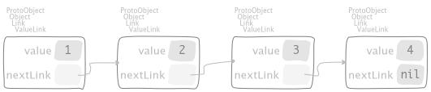
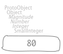

7. Lists¶
7.1. Linked¶
ValueLink objects are small and allow us to compose them in an applicative
way so that we can share part of a composite structure among different client
objects so that those clients don’t observe any side effect on the
ValueLink objects they are currently referencing.
By the way, some applications prefer to have a manager object that handles those links as a whole, hiding the inner machinery that keeps their structure sound. Those managers are called containers.
A ValueLink understands the #asLinkedList message to enclose itself in
a LinkedList container
SequenceableCollection subclass: #LinkedList
instanceVariableNames: 'firstLink lastLink'
classVariableNames: ''
package: 'Collections-Sequenceable-Base'
for example,
"CTLinksValueLinkTest, protocol tests"
testAsLinkedList
^ self exportSlotsGraphOf: self testSimpleValueLink asLinkedList
where
"ValueLink, protocol *Containers-Essentials" asLinkedList | list | list := LinkedList empty. self do: [ :each | list addLast: each ]. ^ listwhere
"Link, protocol *Containers-Essentials" do: aBlock | link | link := self. [ link ] whileNotNil: [ aBlock value: link. link := link nextLink. link == self ifTrue: [ link := nil ] ]

Two observations are in order:
On one hand, since the slot
nextLinkhosts either aLinkornilthen the latter has to understand"UndefinedObject, protocol *Containers-Essentials" asLinkedList ^ LinkedList empty
too and it behaves as follows
"CTLinksValueLinkTest, protocol tests" testNilAsLinkedList ^ self exportSlotsGraphOf: nil asLinkedList

On the other hand, since a
ValueLinkcould keep a recursive structure then all the values are kept as well"CTLinksValueLinkTest, protocol tests" testAsLinkedList4321 ^ self exportSlotsGraphOf: self test4321ValueLinks asLinkedList

Additionally, LinkedList objects can be built using other objects than
ValueLink ones, for example sending #as: to an Interval,
"CTLinksValueLinkTest, protocol tests"
testAsLinkedListFromInterval
^ self exportSlotsGraphOf: ((4 to: 1 by: -1) as: LinkedList)
where
"Number, protocol *Collections-Sequenceable" to: stop by: step "Answer an Interval from the receiver up to the argument, stop, incrementing by step." ^ Interval from: self to: stop by: stepand
SequenceableCollection subclass: #Interval instanceVariableNames: 'start stop step' classVariableNames: '' package: 'Collections-Sequenceable-Base' "I represent a finite arithmetic progression (a range of number). Description -------------------------- I allow to iterate easily on a range of number (for example to manupulate an index) with a define step (by default one by one). Zero step size is not allowed and will raise an error. I know at which number I begin, at which number I end and the step. I work with the Number class. I manipulate some numbers and I can be created from a Number. Public API and Key Messages -------------------------- - I implement most of the classic Iterators as #do: or #collect:. - #from: to: and #from: to: by: are my two common contructors. But I am usually created by a message send on Number (See examples). Examples -------------------------- To create an Interval from 1 to 100 there is many ways: Interval from: 1 to: 100 or Interval from: 1 to: 100 by: 1 or from a Number 1 to: 100 or 1 to: 100 by: 1 You can also use floats or fractions: 0.1 to: 0.5 by: 0.01 or 1/10 to: 1/2 by: 1/100 NB: both expressions will not give exactly the same result. The first will contains only floats and the second only fractions. Internal Representation and Key Implementation Points. -------------------------- Instance Variables start: <Number> The beginning of the Interval. step: <Number> The end of the Interval. stop: <Number> The step of the interval. If the step is 3 and we begin at 1 the interval will be 1, 4, 7, 10, 13… until the end."

Moreover, from a SequenceableCollection we can revert back to a ValueLink with,
"SequenceableCollection, protocol *Containers-Essentials"
asValueLink
^ self foldr: [ :each :aValueLink | each ~~> aValueLink ] init: nil
where
#foldr:init:folds by associating to the right,"SequenceableCollection, protocol *Containers-Essentials" foldr: aBlock init: init | cell | cell := init. self reverseDo: [ :each | cell := aBlock value: each value: cell ]. ^ cell
as we can see in the following example
"CTLinksValueLinkTest, protocol tests"
testAsValueLink
^ self exportSlotsGraphOf: (4 to: 1 by: -1) asValueLink

Using another folding message #inject:into: that associates to the left,
"Collection, protocol enumerating"
inject: thisValue into: binaryBlock
"Accumulate a running value associated with evaluating the argument, binaryBlock, with the current value of the argument, thisValue, and the receiver as block arguments."
"( #(1 2 3) inject: 0 into: [ :sum :each | sum + each ] ) >>> 6"
| nextValue |
nextValue := thisValue.
self do: [ :each |
nextValue := binaryBlock value: nextValue value: each ].
^ nextValue
we obtain a ValueLink that keeps the same elements in reversed order,
"CTLinksValueLinkTest, protocol tests"
testAsValueLinkInjectInto
| l |
l := (4 to: 1 by: -1)
inject: nil
into: [ :aValueLink :each | each ~~> aValueLink ].
^ self exportSlotsGraphOf: l

7.2. Skip lists¶
The first edition [CGG06] has a nice description of skip lists, also for the proof of the complexity. Let us reproduce their working example,
"CTSkipListTest, protocol tests"
sutCrescenzi
| collection |
collection := #( 5 10 16 18 30 41 80 ) asSortedCollection: #<.
^ CTSkipList
onSortedCollection: collection
lowerBound: Float negativeInfinity
upperBound: Float infinity

built by the message
"CTSkipList class, protocol creation"
onSortedCollection: aCollection lowerBound: lower upperBound: upper atRandom: aRandom
| brgc lists nothing cleanLists lowerJust upperJust times |
nothing := Maybe nothing.
lowerJust := lower just.
upperJust := upper just.
brgc := aCollection size asBRGCCollection.
lists := nil.
times := aCollection
ifEmpty: [ 0 ]
ifNotEmpty: [ (aCollection size log: 2) floor + 1 ].
times timesRepeat: [
| list link nextLinkSafe |
link := lists value.
nextLinkSafe := [ link := link ifNotNil: [ link nextLink ] ].
list := CTDoubleValueLink new
value: lowerJust;
previousLink: link;
nextLink: nil;
yourself.
nextLinkSafe value.
aCollection withIndexDo: [ :each :index |
| left eachForList |
left := brgc at: index.
eachForList := left > 0
ifTrue: [ each just ]
ifFalse: [ nothing ].
brgc at: index put: left - 1.
list := CTDoubleValueLink new
value: eachForList;
previousLink: link;
nextLink: list;
yourself.
nextLinkSafe value ].
list := CTDoubleValueLink new
value: upperJust;
previousLink: link;
nextLink: list;
yourself.
nextLinkSafe value.
self assert: link isNil.
lists := list reversed ~~> lists ].
cleanLists := lists.
[ cleanLists ] whileNotNil: [
| list |
list := cleanLists value.
[ list ] whileNotNil: [
| each |
each := list nextLink.
[ each value == nothing ] whileTrue: [ each := each nextLink ].
list := list
value: list value content;
nextLink: each;
nextLink ].
cleanLists := cleanLists nextLink ].
^ self new
lists: lists;
sortBlock: aCollection sortBlock;
lowerBound: lower;
upperBound: upper;
random: aRandom;
yourself
used with a geometric random object,
"CTSkipList class, protocol creation"
onSortedCollection: aCollection lowerBound: lower upperBound: upper
^ self
onSortedCollection: aCollection
lowerBound: lower
upperBound: upper
atRandom: ((RandomGeometric seed: 541)
p: 0.5;
yourself)
The lookup message,
"CTSkipList, protocol testing"
includes: aKey equalityBlock: eqBlock
| link |
link := (self predecessors: aKey) value.
^ eqBlock value: link nextLink value value: aKey
allows us to assert that
is included in the list by means of the interactions,

The search performed during lookup is actually implemented in
"CTSkipList, protocol accessing"
predecessors: key
| link predecessors |
predecessors := nil.
link := lists value.
[ link ] whileNotNil: [
[ sortBlock value: link nextLink value value: key ] whileTrue: [
link := link nextLink ].
predecessors := link ~~> predecessors.
link := link previousLink ].
^ predecessors
and is used also by insertion; by the way, in the second edition [CGGR12] is explained the insertion of

at height 4 that produces

by means of the messages
"CTSkipList, protocol accessing"
add: key atHeight: r
| predecessors height newLink |
predecessors := self predecessors: key.
height := self height.
newLink := self
add: key
atHeight: (r min: height)
predecessors: predecessors.
r > height ifTrue: [
| newList list |
list := lists value.
newList := CTDoubleValueLink new
value: lowerBound;
previousLink: list;
nextLink: (CTDoubleValueLink new
value: key;
previousLink: newLink;
nextLink: (CTDoubleValueLink new
value: upperBound;
previousLink: (list ifNotNil: [ list last ]);
nextLink: nil;
yourself);
yourself);
yourself.
lists := newList ~~> lists ]
and
"CTSkipList, protocol accessing"
add: key atHeight: r predecessors: aLink
| newLink predecessors |
predecessors := aLink.
newLink := nil.
r timesRepeat: [
| predecessor |
predecessor := predecessors value.
newLink := CTDoubleValueLink new
value: key;
previousLink: newLink;
nextLink: predecessor nextLink;
yourself.
predecessor nextLink: newLink.
predecessors := predecessors nextLink ].
^ newLink
respectively. In order to see randomization, we add elements

one after the other to obtain the list
which is initially built from an empty sorted collection. Here is what happened,

Last, an arbitrary list with

elements looks like,
